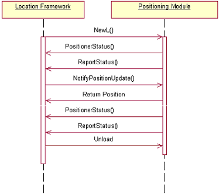
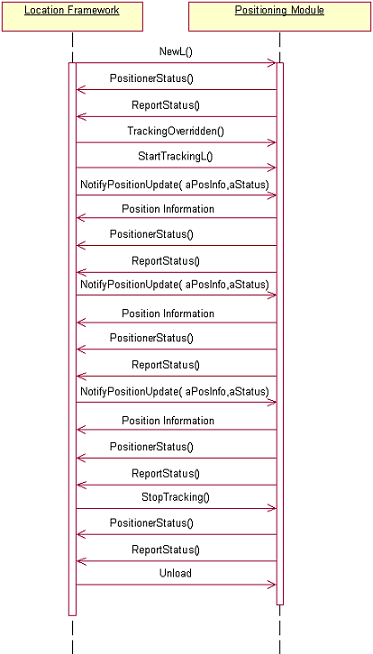
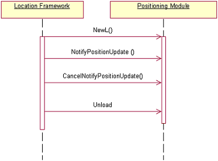

Implement a subclass of CPositioner
This section describes the coding tasks necessary to implement a PSY.
CPositioner is the interface between the Location Framework and a PSY. A PSY must implement a CPositioner subclass to handle positioning requests from the Location Framework. The Location Framework uses the PSY CPositioner subclass object to handle the use cases of the Positioning Plug-in API.
The use cases of the Positioning Plug-in API are as follows:
The Location Framework loads the PSY either directly of via a Proxy PSY.
The Location Server sets update options on the PSY.
The Location Server requests a position update.
The Location Server requests periodic position updates.
The Location Server cancels a location request.
The PSY reports its status to the Location Server.
- Create a sub-class of CPositioner The Positioning Module API describes the classes of the API. A PSY must implement the two overloaded NewL() methods of the API to allow it to be loaded by the Location Framework or by a Proxy PSY. The two cases are described in more detail as follows:
Location Framework loads the PSY When the Location Framework loads a PSY it instantiates an instance of the CPositioner subclass using the CPositioner::NewL() method. The subclass implementation must define a NewL (TAny* aConstructionParameters) constructor. This constructor must call CPositioner::BaseConstructL (TAny*
aConstructionParameters) first after the instance has been created. The construction parameters received in NewL() must be forwarded to BaseConstructL(). It is not permitted to pass a NULL pointer. The pointer is used for the internal construction of the CPositioner instance.
A Proxy PSY loads the PSY A Proxy PSY (such as the Default Proxy PSY) can instantiate other PSYs. When the Proxy PSY instantiates a PSY it must use the overloaded static constructor NewL(TUid aImplementationUid, const CPositioner&
aPositioner) where aImplementationUid is the UID of the PSY that must be constructed and the CPositioner parameter is the Proxy PSY instance. The constructor parameters for the PSY are derived from the Proxy PSY instance in this case. A Proxy PSY must not use the constructor used by the Location Framework since the construction parameters are not public. A PSY must also report the device status when it is loaded and unloaded.
The following code example shows an example PSY static constructor implementation. CPosExamplePositioner* CPosExamplePositioner::NewL(
TAny* aConstructionParameters)
{
CPosExamplePositioner* self =
new (ELeave) CPosExamplePositioner;
CleanupStack::PushL(self);
self->ConstructL(aConstructionParameters);
CleanupStack::Pop();
return self;
}
void CPosExamplePositioner::ConstructL(
TAny* aConstructionParameters)
{
// Must call BaseConstructL first thing during
// construction.
BaseConstructL(aConstructionParameters);
}
- Write code to handle the Location Server setting GPS options The PSY can also be passed options for a position request. The parameters are obtained through accessor methods provided on the CPositioner class. The CPositioner base class provides a default implementation that retrieves the options provided by the client application when it makes a location request. The PSY implementation can override these methods if required:
CPositioner::GetMaxAge() A client application may specify a maximum age when performing a position request. This means that a position can be returned from an old measurement as long as the position is not older than the specified maximum age. Supporting maximum age is optional in a PSY. If the PSY developer wants to support the maximum age, the PSY must be implemented to cache the latest position estimate. GetMaxAge() is the function that the PSY implementation can use to retrieve the maximum age specified by the client.
CPositioner::IsPartialUpdateAllowed() A client application may specify that it accepts incomplete location information. Incomplete location information is only required to contain the time and the PSY ID. It is not required to include latitude or longitude. For example, a GPS PSY may read NMEA sentences, which does not include a fix because the terminal is indoors. The GPS PSY could still return satellite information to the client if partial updates are allowed. The PSY can check if partial location information is accepted by the client by calling IsPartialUpdateAllowed(). If ETrue is returned, then the PSY can return an incomplete fix.
CPositioner::GetRequiredPositionQuality() A client application may specify a required position quality. The PSY can use the position quality if it is possible to specify the required quality of position to the positioning technology that it encapsulates. GetRequiredPositionQuality() returns KErrNotFound if no quality has been specified by the client. Important Note:
GetRequiredPositionQuality() is not currently supported and always returns KErrNotFound.
- Write code to handle a single location request When a client requests location information from the Location Framework, the framework forwards the request to a PSY instance. CPositioner provides a pure virtual method CPositioner::NotifyPositionUpdate() that must be implemented by the PSY in order to handle a position request. NotifyPositionUpdate() is an asynchronous call and must be implemented in the PSY to return at once. If positioning takes time, it should be implemented using active objects, otherwise the Location Server is blocked for the time that a position fix is being obtained by the PSY. NotifyPositionUpdate() has a TRequestStatus parameter which is used to signal that the position acquisition is complete. NotifyPositionUpdate () also has a TPositionInfoBase as an output parameter. This object is used to pass position information back to the client. TPositionInfoBase is an abstract class and the actual class hierarchy of the position information object can be obtained by calling TPositionInfoBase::PositionClassType(). The PSY must cast the position information object to the actual subclass and the appropriate position information filled in. PSYs can support different sets of position information classes but TPositionInfo and HGenericPositionInfo are mandatory. The position information class must store data as specified by the WGS84 geodetic datum. The PSY must also report the data quality status while returning position information. This sequence diagram of figure 1 shows the steps that are involved when the Location Framework makes a request for a position update from a PSY.
Figure 1.
Figure 1. Handling a request for position information.

The following code example shows how to process a location request. void CPosExamplePositioner::NotifyPositionUpdate(
TPositionInfoBase& aPosInfo,
TRequestStatus& aStatus)
{
TRequestStatus *statusPtr = &aStatus;
// NotifyPositionUpdate must return quickly. It should
// be implemented as asynchronous but since Example PSY
// is very fast, we fetch the position synchronously.
// The position info object is at least a TPositionInfo
// Hence casting it to TPositionInfo. Ideally the class type
// should be obtained and then cast to the specified
// position information class.
TPositionInfo* aPosInfo =
static_cast<TPositionInfo*>(&aPosInfo);
TPosition pos;
// Calculate the position and fill in the position info
// object
pos.SetCoordinate(65.345, 11.456);
// set horizontal and vertical accuracy
pos.SetAccuracy(10.0, 30.0);
// set time of fix
pos.SetCurrentTime();
// Set position in position info.
posInfo->SetPosition(pos);
User::RequestComplete(statusPtr, KErrNone);
}
- Write code to handle periodic location requests (tracking) A client application can request periodic position updates from the Location Framework. This is known as tracking. If the client application continues to reissue position requests as soon as the last request completes then it receives periodic position updates. The Location Framework sends a position request to a PSY when a location update is required by a client. The PSY must be ready to give position information as soon as the Location Framework sends a request. A PSY needs to know about the requirement for periodic position requests if the underlying positioning technology needs to be kept powered in order to provide fast position updates. Conversely, a PSY can go into standby mode if it knows that it is a long time until the next request. To support tracking the PSY must implement the following virtual methods in CPositioner:
CPositioner::TrackingOverridden() must be implemented by the PSY CPositioner subclass to return ETrue. This indicates that the PSY implements specific logic to handle periodic position updates. The default implementation for TrackingOverridden in CPositioner returns EFalse.
CPositioner::StopTracking() must be overridden by the PSY CPositioner subclass. It is called by the Location Framework to signal that the tracking session has been closed so the PSY can put the positioning technology hardware into standby mode. The default implementation for StopTracking() in CPositioner does not perform any action. If a PSY implementation returns ETrue from CPositioner::TrackingOverridden() then it should provide an implementation of StopTracking().
CPositioner::StartTrackingL() must be overridden by the PSY CPositioner subclass. It is called by the Location Framework to signal that the Location Server has started a tracking session. The PSY can start the positioning technology specific device/protocol and keep it in state where position information can be obtained quickly. The periodicity of position updates requested by theclient application is passed as an input parameter to this method. If the PSY cannot support the periodicity, it must return fixes as frequently as possible. The default implementation for StartTrackingL() in CPositioner leaves with KErrNotSupported. If the PSY implementation returns ETrue from TrackingOverridden then it needs to provide an implementation of StartTrackingL().
Figure 2 shows the steps that are involved when the Location Framework initiates a periodic position request from a PSY: Figure 2.
Figure 2. Handling periodic position determination request

- Write code to handle request cancellation When the client requests cancellation of an outstanding location request from the Location Framework, the framework forwards the request to the corresponding PSY instance. The CPositioner provides a pure virtual method CPositioner::CancelNotifyPositionUpdate() that has to be implemented by the PSY in order to handle cancellation of a position request. CancelNotifyPositionUpdate() must be implemented to cancel any outstanding request in the PSY. Typically this involves cancelling some active object. If there is an outstanding request, it must be completed with the code KErrCancel. Figure 3 shows the steps that are involved when the Location framework initiates a cancel request for an outstanding position request.
Figure 3.
Figure 3. Cancelling a position determination request

void CPosExamplePositioner::CancelNotifyPositionUpdate()
{
// Since the Example PSY can deliver a position very
// fast it has been implemented synchronously which
// means that there will never be an outstanding
// request to cancel.
// For your specific PSY cancel any asynchronous request
// that was made to get the position information from the
// underlying positioning technology.
}
- Write code to support advanced PSY functionality CPositioner defines virtual functions that are required to implement advanced functionality. It provides a default implementation for these functions and the PSY can override these if it needs to implement any of the advanced PSY features:
ServiceL The Location Acquisition API can be extended to support PSY specific method calls. This means that RPositioner can be sub-classed to define the new methods. The methods are implemented to pack their parameters and send them to the Location Server by calling SendReceive(). The Location Server forwards such requests to the ServiceL () method of the PSY and passes an RMessage2 object that contains the request information. RMessage2 is handled as in an ordinary client/server request. ServiceL is a virtual function and can be overridden by a PSY developer to support PSY specific method calls. This feature is reserved for future use.
Handling parallel requests CPositioner is instantiated once for each open client handle, which means that the PSY may have to handle many position requests at the same time. However, the position technology used by the PSY may not support parallel requests. This means that the positioner instances cannot work independently. The PSY needs a centralised request control. The suggested solution is to use a singleton object, i.e. an object which is instantiated when the PSY is loaded (when the first CPositioner object is instantiated) and which is not deleted until the PSY is unloaded (when the last CPositioner object is deleted). All positioner objects forward their requests to the singleton object which implements the strategy for how parallel requests should be handled. Since a PSY is a DLL, the thread local storage must be used to store the singleton.
Power management The PSY developer should consider power management. If the positioning technology draws much power, the PSY may enter the power save mode when it has not been used for a while. In such cases the PSY should use tracking (periodic position update requests) effectively and try to keep the device in standby mode when position information is not required immediately.
- Write code to report the PSY device status A PSY has to report its status to the Location Framework when it is being used. There are two types of status that must be reported:
The status of the device or positioning technology that is being used by the PSY for obtaining the position information.
The status about the quality of the position fix that the PSY is providing at the moment. The data quality status indicates the accuracy of the data returned by the PSY.
In order to report these statuses the PSY needs to use the CPositioner::PositionerStatus() method provided by the CPositioner class. This method returns an MPositionerStatus interface through which the status can be reported by calling MPositionerStatus::ReportStatus().
Write code to report device status A PSY must report the following device statuses: When the Location Framework loads a PSY, the PSY initializes the device providing the location information. Once the device is ready the PSY must report EDeviceReady.
When the device is used by the PSY to obtain a location fix then the PSY must report a EDeviceActive status.
The PSY must also set the status to EDeviceInactive when the PSY is unloaded (i.e. when the last CPositioner instance is destroyed).
Apart from the statuses listed above there are a few other device status which a PSY can optionally report: When the PSY is loaded and before the device is ready, the PSY can report a EDeviceIntialising status.
The PSY can report EDeviceStandby if the device has been moved to a sleep or power save mode. At this state it is assumed that the device cannot retrieve location fix immediately.
The PSY can report a EDeviceError if there are some problems in using the device.
The PSY can report EDeviceDisabled if the device is unavailable to obtain position information.
Note: The device may still be working properly hence this status is different from EDeviceError.
Write code to report data quality status A PSY must report the quality of the position information that is obtained from the device. The following data quality statuses can be reported: If the position fix contains all the required information then the PSY should report a EDataQualityNormal status.
If the position information returned by the device does not contain all the necessary fields for a position fix then it should report EDataQualityPartial.
If the PSY is unable to obtain any position information from the device then it should report a EDataQualityLoss status. Note that in this case it is possible that the device is working properly but it is unable to obtain the position information.
The CPositioner subclass is instantiated by the Location Framework for each open client session. Hence it is possible to have multiple instances of the CPositioner subclass implemented by the PSY, which means that the PSY may have to handle more than one position request at a time. When handling such parallel requests, the status tracking mechanism in the PSY must also be centralised and the status should be reported only through one of the CPositioner instances. To achieve this the PSY should report status using a singleton class.
- Write an ECOM factory function A PSY is an ECOM plug-in and it must follow certain rules in order to be loaded by the Location Framework. To enable loading, the PSY must define the following function at ordinal 1:
const TImplementationProxy* ImplementationGroupProxy(TInt& aTableCount)
TImplementationProxy is defined by ECOM and it contains information about the available factory functions. The PSY must set aTableCount to 1 and return TImplementationProxy, which points to the PSY factory function: CPositioner::NewL() in the CPositioner subclass. Providing several implementations within one PSY is not supported. The example PSY exports the CExamplePositioner::NewL() method by providing the following code: // Note! UID below is implementation UID, not DLL UID.
const TImplementationProxy KFactoryPtr =
{{KPosExamplePSYImplUid}, (TProxyNewLPtr) CPosExamplePositioner::NewL};
EXPORT_C const TImplementationProxy* ImplementationGroupProxy(
TInt& aTableCount)
{
aTableCount = 1;
return &KFactoryPtr;
}
After implementing the code necessary to create the PSY, a device creator must package it as an ECOM plug-in that can be loaded by the LBS subsystem.
See Provide ECOM registry information for a PSY for more information.
Copyright ©2010 Nokia Corporation and/or its subsidiary(-ies).
All rights
reserved. Unless otherwise stated, these materials are provided under the terms of the Eclipse Public License
v1.0.